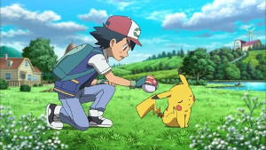

El Anime:
Pokémon es un anime metaserial creado por Satoshi Tajiri, Junichi Masuda y Ken Sugimori, que narra la
historia
de Ash Ketchum, un joven entrenador Pokémon de Pueblo Paleta que comienza un viaje para alcanzar su sueño, ser
un Maestro Pokémon. La serie está basada en la saga de videojuegos de Pokémon también creada por Satoshi Tajiri, desarrollada por Game Freak y
distribuida por Nintendo, que aparecieron por primera vez en el mercado japonés el 27 de febrero de 1996.
El éxito de los videojuegos que aún se mantiene hasta estos días, hizo que su trama fuera adaptada en un
anime
producido por los estudios de animación OLM, Inc., el cual es emitido por la cadena de televisión TV Tokyo
desde
que se estrenó el 1 de abril de 1997.
Detalle Temporadas:
Argumento
Ash Ketchum es un muchacho entusiasta a quien le gustan los Pokémon y las batallas. Su gran pasión por los
pokémon lo ha llevado a proponerse el objetivo de convertirse en Maestro Pokémon, el más alto grado de
entrenamiento Pokémon, motivo por el cual comienza un viaje en búsqueda de este título. Al cumplir 10 años,
Ash
tiene la oportunidad de recibir su pokémon inicial por parte del Profesor Oak. Desafortunadamente, se quedó
dormido una noche antes de su primer día de viaje y para cuando llegó al laboratorio del profesor, todos los
Pokémon iniciales (Bulbasaur, Charmander y Squirtle) ya habían sido elegidos por otros entrenadores.

Su insistencia por tener un Pokémon, le permitió recibir como su Pokémon inicial un Pikachu terco al que no
le
gusta entrar en las Poké Balls. Durante su recorrido por el bosque, por novatadas e intentos frustrados para
capturar un pokémon, Ash y Pikachu son atacados por una bandada salvaje de Spearow.Para escapar de los pokémon
voladores, Ash decide sumergirse a un río para no ser visto. Al otro lado del río, una chica llamada Misty
(que
más tarde sigue a Ash en su viaje con el pretexto de que le pague su bicicleta) estaba pescando pokémon
acuáticos con su caña y por error captura a Ash y su Pikachu malherido que estaban sumergidos en el agua. Al
observar que la manada de Spearow seguía tras ellos, Ash toma la bicicleta de Misty para dirigirse al Centro
Pokémon y así poder curar a Pikachu pero al no poder huir a pesar de viajar en bicicleta, Ash se puso a sí
mismo
en peligro por defender a Pikachu.
Por medio de estas demostraciones de respeto y compromiso incondicional a su pokémon, Pikachu comenzó a
sentir
aprecio por Ash y su amistad se formó. Poco después en el Centro Pokémon, en una confrontación contra el
Equipo
Rocket en donde se demostró que el gran poder de Pikachu sobrepasaba el poder de su evolución, el Equipo
Rocket
constantemente intenta capturar al pokémon para Giovanni, jefe de la organización.
Al llegar a Ciudad Pewter tras pasar el Bosque Viridian, Ash decide participar en la Liga Pokémon. Para
comenzar su travesía de recolección de medallas de gimnasio por toda la región Kanto, Brock es el primer líder
de gimnasio que es desafiado por Ash a una batalla oficial. Sin embargo, al no poder vencer a Brock, Ash
decide
ir a otro gimnasio. Poco después Brock entrega a Ash su primera medalla de gimnasio y deja su cargo de líder
de
gimnasio para viajar junto con Ash y cumplir su sueño de ser un Criador Pokémon.Desde ese día, Ash viaja por
todo Kanto recolectando medallas de gimnasio en compañía de Misty y Brock. Después de conseguir las 8 medallas
de los gimnasios de Kanto, Ash participa en el torneo de la Liga Pokémon en donde queda entre los 16 mejores
entrenadores de la competencia
| Serie |
Temporadas |
Pokémon La Serie Original
Cuenta con 276 capítulos y abarca las primeras cinco temporadas en occidente, se inicio originalmente
en Japón el 1 de abril de 1997
|
-
TEMPORADA 1: ¡ATRAPALOS YA! (¡YO TE ELIJO! / LIGA AÑÍL)
-
TEMPORADA 2: LIGA NARANJA
-
TEMPORADA 3: LOS VIAJES JOHTO
-
TEMPORADA 4: LOS CAMPEONES DE LA LIGA JOHTO
-
TEMPORADA 5: LA BÚSQUEDA DEL MAESTRO
|
POKÉMON: GENERACIÓN AVANZADA
Es la segunda serie del anime, no obstante el título de esta serie continúa siendo «Pocket Monsters» en
la versión japonesa. Los primeros 131 episodios están ambientados en la región Hoenn y basados en
Pokémon Ruby y Sapphire, los 2 primeros videojuegos de la tercera saga principal de videojuegos de la
franquicia Pokémon; mientras que el resto (61 episodios) están basados en la Batalla de la Frontera o
Frente de Batalla del videojuego Pokémon Esmeralda y ambientados en la región Kanto.
|
- TEMPORADA 6: FUERZA MÁXIMA
- TEMPORADA 7: RETO MÁXIMO
- TEMPORADA 8: BATALLA AVANZADA
- TEMPORADA 9: LA BATALLA DE LA FRONTERA
|
POKÉMON: DIAMANTE Y PERLA
Es la tercera serie del anime, no obstante el título de esta serie continúa siendo «Pocket Monsters» en
la versión japonesa. Está ambientada en la región Sinnoh y basada en el argumento de Pokémon ediciones
Diamante y Perla, los 2 primeros videojuegos de la cuarta saga principal de videojuegos de la franquicia
Pokémon
|
- TEMPORADA 10: DIAMANTE Y PERLA
- TEMPORADA 11: DIMENSIÓN DE BATALLA
- TEMPORADA 12: BATALLAS GALÁCTICAS
- TEMPORADA 13: LOS VENCEDORES DE LA LIGA SINNOH
|
POKÉMON: BLANCO Y NEGRO
Es la cuarta serie del anime. El 15 de abril de 2010, TV Tokyo confirmó la conclusión de Pokémon Diamond
& Pearl en otoño de 2010 y asimismo el inicio de una nueva serie basada en los videojuegos Pokémon Negro
y Blanco, que salieron la venta en el mercado japonés el 18 de septiembre. Finalmente, el 23 de
septiembre de 2010 se estrenó en TV Tokyo la cuarta serie de anime basada en Pokémon bajo el nombre de
Pokémon Best Wishes!
Luego de despedirse a Dawn/Maya y despedirse de Brock, Ash emprende otro viaje hacia una nueva región
llamada Unova/Teselia y las islas decolora, donde Ash conoce a sus nuevos compañeros de viaje Iris y
Cilan
|
-
TEMPORADA 14: BLANCO Y NEGRO
-
TEMPORADA 15: DESTINOS RIVALES
-
TEMPORADA 16: AVENTURAS EN UNOVA
|
POKÉMON: XY
Es la quinta serie del anime. Luego de despedirse de Iris y Cilan/Millo, Ash emprende un nuevo viaje a
la región Kalos para reunir sus 8 medallas de gimnasio y poder competir en la Liga Pokémon de esa nueva
región, en esta nueva aventura los acompaña Serena, Bonnie/Clem y su hermano Clemont/Lem. Algo que
podemos destacar en esta serie es que podremos ver la megaevolución, que fue introducida en Pokémon X e
Y, videojuegos en los que está basada esta serie del anime.
|
-
TEMPORADA 17: XY
-
TEMPORADA 18: XY: Expediciones En Kalos
-
TEMPORADA 19: XYZ
|
POKÉMON: SOL y LUNA
Es la sexta serie del anime. En esta serie Ash está viviendo aventuras con sus compañeros de clase:
Lulú, Kiawe, Nereida, Lylia y Chris por la región de Alola.
|
-
TEMPORADA 20: SOL Y LUNA
-
TEMPORADA 21: SOL Y LUNA: Ultra Aventuras
-
TEMPORADA 22: SOL Y LUNA: Ultra Legendas
|
POCKET MONSTERS
Pokémon, se emite en Japón bajo el título de Poketto Monsutā? es la séptima serie del anime, y parte de
la octava generación de la franquicia titulada "Espada y Escudo", aunque incluye elementos basados en
Pokémon Go.
|
-
TEMPORADA 23: Pokemon (Pocket Monsters)
-
TEMPORADA 23: Pokemon Viajes! (Pocket Monsters)
|